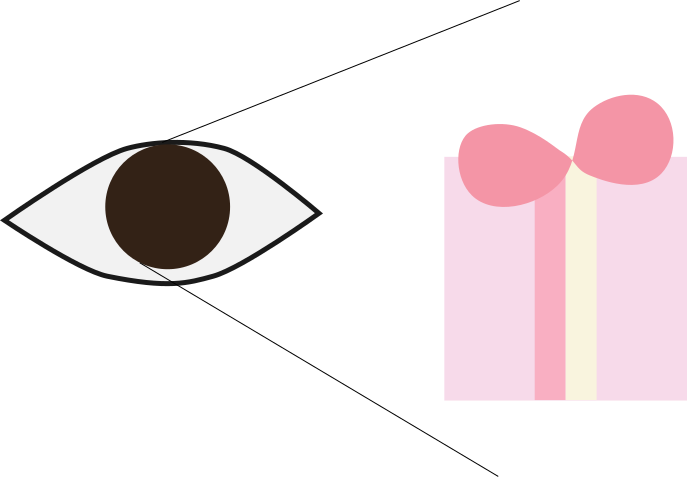
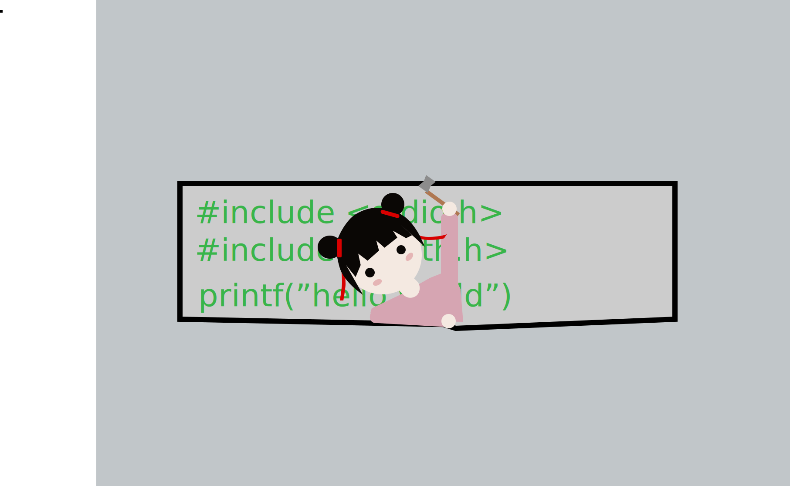
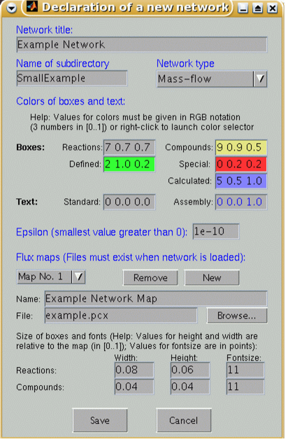
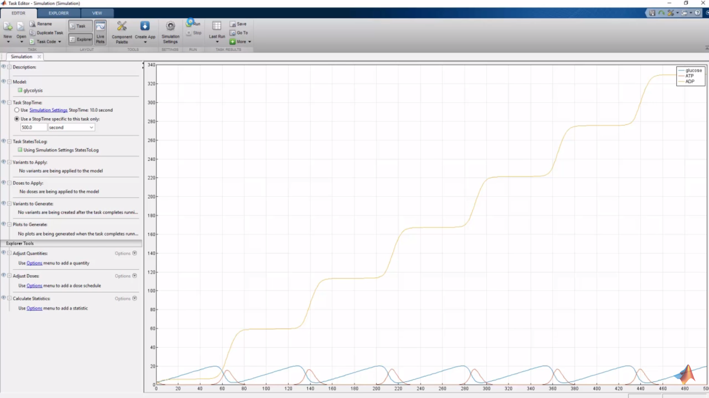

Description
Background
Since we wanted to develop the software that indeed solve wet-lab problems using our software solutions, we went to collaborate with Team USTC in our school, doing experiments for a period in their lab. During our learning at the lab, we found some problems, I mean, some needless and superfluous issues which may be reduced by our good software. Also, we learned a lot from our PI, got a better understanding of synthetic biology.
After talking with our PI, we learned about Flux balance analysis (FBA). FBA is a method for analyzing the flow of metabolites through a metabolic network. FBA can calculate the flow of it and make it possible to "foresee" the growth rate of an organism or a biotechnologically significant metabolite.
After talking with our PI, we learned about Flux balance analysis (FBA). FBA is a method for analyzing the flow of metabolites through a metabolic network. FBA can calculate the flow of it and make it possible to "foresee" the growth rate of an organism or a biotechnologically significant metabolite.
Inspiration
iGEMers and biological factories frequently complain it repeated and troublesome to improve a genetic circuit and implement genome-scale metabolic network reconstructions when they dissatisfy the productivity of the organism, as we investigated. Factories regularly do such work simply based on experience or maybe just by random attempt. Labs may use some mathematical methods. Just as mentioned, the FBA and its further study have been proved useful in physiological studies, gap-filling efforts and genome-scale synthetic biology. However, using such methods doesn't mean that failure would not occur, and plenty of experiments, namely, plenty waste of time may still be demanded. For sure, there are several software that are made for such modeling, yet they do have several defects. Meanwhile, considering that both factories and iGEMers may specialize in biology but be quite unfamiliar with computer software, those command-prompt-only software are not perfect.
Obviously, current tools cannot satisfy the need. Thus, here comes "ForeSyn", the software born to solve the problem.
Obviously, current tools cannot satisfy the need. Thus, here comes "ForeSyn", the software born to solve the problem.
Project
Foresyn is a user-friendly platform that was designed specifically for synthetic biologists to solve such issues above. Just like its name, Foresyn can foresee the targeted improvements to the users' experiment, give advise and therefore increase productivity, literally by the neoteric workflow management based on our customized database.
By using our software, labs and factories can alter the bounds on certain reactions to simulate the growth on different media or of bacteria with multiple gene knockouts. Despite this, users can select their own object function, and our software can output the optimal solution of it. Meanwhile, our biobricks recommendation system can greatly reduce the experimenters' needless searching time.
Of course, users don't need to recite so many command codes. All you need may be a single mouse. Moreover, our software performs a better user experience by presenting supreme graphical result display.
Through this things, Foresyn can literally predict, I mean, foresee the likely result or trend of an experiment conducted by a synthetic biologist. Particularly, what it sees immediately transforms into what you see.
By using our software, labs and factories can alter the bounds on certain reactions to simulate the growth on different media or of bacteria with multiple gene knockouts. Despite this, users can select their own object function, and our software can output the optimal solution of it. Meanwhile, our biobricks recommendation system can greatly reduce the experimenters' needless searching time.
Of course, users don't need to recite so many command codes. All you need may be a single mouse. Moreover, our software performs a better user experience by presenting supreme graphical result display.
Through this things, Foresyn can literally predict, I mean, foresee the likely result or trend of an experiment conducted by a synthetic biologist. Particularly, what it sees immediately transforms into what you see.
Features
Lessen Your Needless Works

What You See Is What You Get
No Command Prompt Using Need
Comprehensive Customized Database
What You See Is What You Get

No Command Prompt Using Need

Comprehensive Customized Database
Comparison
Comparing our project with the software we can get from online now, we
find that our project has some significant features that distinguish it from the others.
Firstly, we do some research on the cobra. Undoubtedly, it's a powerful software when it comes to simulation
and calculation. However, it bases on the Matlab and requires a relatively long time to learn how to use it.
And it’s hard to compare two model with each other.
After that, we do some more detailed researches on several types of software based on cobra, and most of them have some significant defects. For example, you have to download the whole MatLab to use some of the software. And some of them like CellNetAnalyzer are more friendly for Linux and cannot function well in Windows, which will cause a lot of troubles.
Our tool is more user-friendly because you can use it directly online, and you don't need to learn a new programming language. Just a few inputs are required, but you can get a complete analysis!
After that, we do some more detailed researches on several types of software based on cobra, and most of them have some significant defects. For example, you have to download the whole MatLab to use some of the software. And some of them like CellNetAnalyzer are more friendly for Linux and cannot function well in Windows, which will cause a lot of troubles.
| CellNetAnalyzer | Cobra | BioSPICE MOMA | MetaFluxNet | PathFluxNet | Fbatool | |
| Graphical | ✔ | ✘ | ✘ | ✔ | ✘ | ✘ |
| Operating System | Windows | Windows | Windows Linux | Windows | Linux UNIX | Corona |
| Algorithm | MFA SNA | FBA MOMA DFBA FVA | FBA MOMA | MFA | FBA MOMA | FBA |

And we have also done some researches on simbiology, a tool in Matlab referred by Yonghao Liang, a senior
student in our school. It turns out that it can predict how the concentration of metabolites will change as
time goes on. But it can only deal with a few reactions at one time, which can not meet our needs to edit a
whole model.
The GUI of CellNetAnalyzer

One simulation by simbiology
Our tool is more user-friendly because you can use it directly online, and you don't need to learn a new programming language. Just a few inputs are required, but you can get a complete analysis!
Slogan
Foresyn foresees the synthetic biological experiments, and makes you see further.